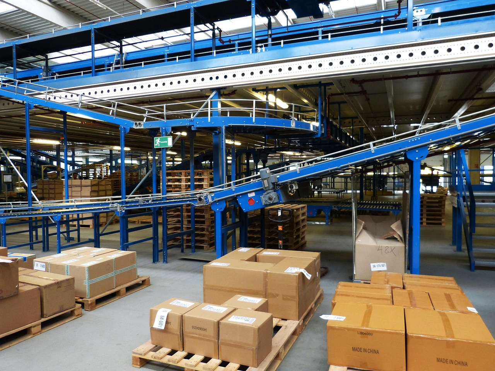
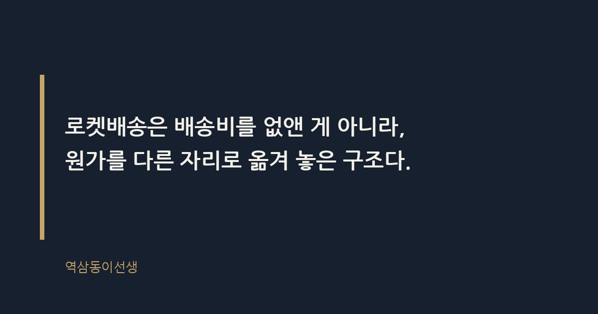
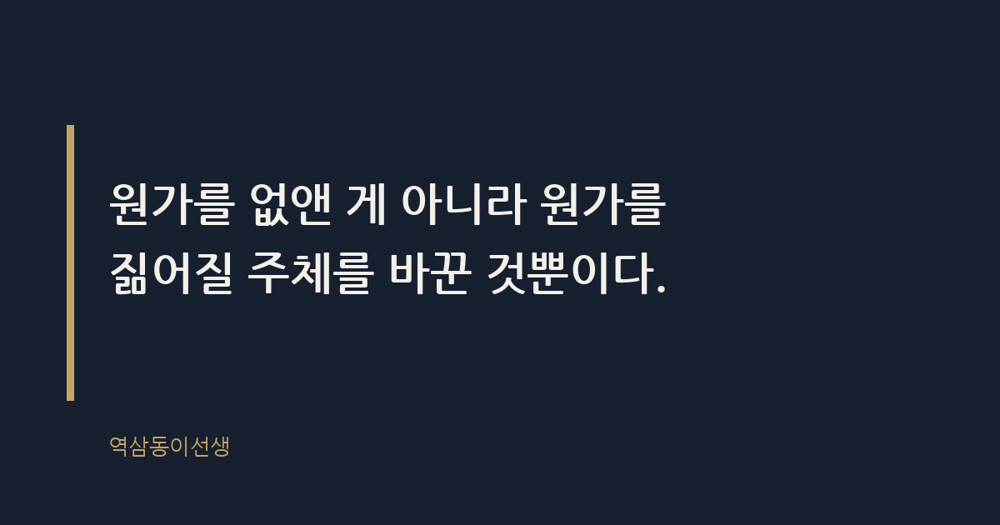

주제 쿠팡 로켓배송의 물류 원가 구조 (evergreen / brand)
제목 후보
메타 설명 쿠팡 로켓배송이 배송비 없이 유지되는 이유를 물류 원가 구조로 풀어본다. 직매입, 라스트마일, 쿠팡친구 고용 방식까지 숨은 원가를 짚는다.
라벨 쿠팡, 로켓배송, 물류비, 쿠팡멤버십, 직매입, 라스트마일, 쿠팡로켓배송원가, 물류원가구조, 쿠팡흑자전환, 쿠팡풀필먼트센터, 와우멤버십요금
실용 자산 계산·기준 표 — 정확한 금액 대신 원가 항목별 비중과 구조를 비교하는 표가 '물류 원가 구조' 검색 의도에 맞고, 지어낸 숫자 없이도 실용 정보를 줄 수 있다
발행 전 팩트체크
이미지 (Blogger 편집기에 드래그해 넣으세요)



토요일 밤 11시, 집에 생수가 똑 떨어졌다는 걸 뒤늦게 알았다. 반쯤 포기하는 마음으로 쿠팡 앱을 열어 2리터짜리 여섯 병을 장바구니에 담고 결제 버튼을 눌렀다. 다음 날 아침 일곱 시, 현관 앞에 상자가 놓여 있었다. 배송비는 없었다. 생수 여섯 병 값에, 밤사이 트럭을 몰고 와 계단을 오르내린 누군가의 노동이 통째로 얹혀 있었는데도 가격은 그대로였다.
이 장면을 몇 번 겪다 보면 질문 하나가 남는다. 이게 어떻게 수지가 맞을까. 로켓배송은 배송비를 없앤 게 아니라, 원가를 다른 자리로 옮겨 놓은 구조다. 소비자가 안 내는 돈을 쿠팡이 10년 가까운 시간 동안 적자로 먼저 치렀다.
로켓배송 물류 원가란 상품이 물류센터에 들어온 순간부터 소비자 현관에 놓이기까지 드는 모든 비용이다. 보관비, 분류비, 포장비, 운송비, 그리고 마지막 구간을 뛰는 사람의 인건비까지 전부 포함된다. 라스트마일이란 물류센터를 떠난 상품이 소비자의 현관에 도착하기까지 마지막 배송 구간을 뜻한다. 업계에서는 이 라스트마일이 전체 물류비의 절반 가까이를 차지하는 것으로 알려져 있다.
일반 택배사는 이 구간을 대리점과 개인 기사에게 위탁한다. 기사 한 명이 자기 차량으로 여러 화주의 물건을 섞어 배달하고, 건당 수수료를 받는 구조다. 쿠팡은 이 구간을 통째로 직접 고용했다. 쿠팡친구라는 이름으로 불리는 배송 인력을 정규직 또는 준정규직으로 두고, 쿠팡 물건만 배송하게 만든 것이다. 중간 대리점 마진이 빠지니 건당 원가는 낮아지는 대신, 고정 인건비라는 부담을 쿠팡이 통째로 짊어지게 됐다.
쿠팡은 물류비 항목을 금액으로 공개하지 않는다. 다만 물류업계에서 통용되는 원가 구성 순서로 보면 어디에 돈이 몰리는지는 어렴풋이 그려진다.
| 비용 항목 | 내용 | 원가 비중(업계 통상 경향) |
|---|---|---|
| 보관·재고 비용 | 전국 물류센터에 상품을 미리 사들여 쌓아두는 비용. 재고 회전이 늦으면 비용이 커진다 | 중간 |
| 분류·피킹 비용 | 주문 들어온 상품을 찾아 포장대로 옮기는 과정. 자동화 설비 투자로 절감 가능 | 중간 |
| 간선 운송비 | 물류센터 간, 혹은 물류센터에서 배송 캠프까지 트럭으로 옮기는 비용 | 낮음~중간 |
| 라스트마일 배송비 | 캠프에서 소비자 현관까지, 쿠팡친구 인건비 포함 | 가장 큰 비중 |
| 반품·교환 처리 비용 | 무료 반품 정책을 유지하기 위한 역방향 물류 비용 | 눈에 잘 안 띄지만 꾸준한 비중 |
물류센터 안쪽을 들여다보면 원가 싸움의 또 다른 전선이 보인다. 사람이 상품을 찾아 들고 뛰던 구간을 컨베이어와 로봇 분류기가 대신하기 시작하면서, 분류·피킹 구간의 건당 처리 시간이 눈에 띄게 줄었다는 게 업계의 공통된 관찰이다. 초기 투자 비용은 수백억 원 단위로 들어가지만, 한 번 설비를 깔아 놓으면 주문량이 늘어나도 추가 인력 없이 처리량을 끌어올릴 수 있다는 게 자동화의 매력이다.
흥미로운 건 이 자동화 투자가 라스트마일 비용을 줄이지는 못한다는 점이다. 로봇은 물류센터 안에서만 일한다. 현관 앞 계단을 오르는 건 여전히 사람의 몫이다. 그래서 쿠팡은 센터 안쪽은 기계로, 센터 바깥쪽은 사람으로 이원화해서 원가를 관리한다. 안쪽을 빠르게 해서 바깥쪽에 쓸 시간을 벌어주는 구조라고 보면 이해가 쉽다.
쿠팡 로켓배송의 또 다른 축은 직매입이다. 직매입이란 플랫폼이 판매자 대신 상품을 직접 사들여 자기 재고로 보유하는 방식이다. 다른 오픈마켓은 판매자가 올린 상품을 중개만 하고 수수료를 받지만, 쿠팡은 생수든 기저귀든 직접 사들여 자기 창고에 쌓아 놓고 주문이 들어오면 그 자리에서 바로 꺼내 보낸다. 판매자와 가격, 재고를 조율하는 시간이 사라지니 배송은 빨라지지만, 재고가 안 팔리면 그 손실은 고스란히 쿠팡 몫이다.
쿠팡이 직매입 방식을 고수하는 이유는 속도 때문이다. 주문과 동시에 물건을 찾아 포장하는 과정을 중개 구조 없이 처리해야 다음 날 새벽 배송이 가능해진다. 전국 100여 개로 알려진 물류센터에 미리 상품을 분산 배치해 두는 것도 같은 이유다. 서울에서 주문했는데 창고가 부산에 있으면 아무리 트럭이 빨라도 다음 날 새벽 도착은 불가능하다. 그래서 쿠팡은 전국 단위로 수요를 예측하고, 그 예측에 맞춰 재고를 지역별로 미리 깔아 둔다. 예측이 틀리면 그 비용은 조용히 원가에 쌓인다.
명절 직전 물류센터를 직접 가본 적이 있다. 평소라면 비어 있을 통로까지 박스가 쌓여 있었고, 담당자는 "이거 반은 안 팔릴 걸 알면서도 쌓아 둔다"고 했다. 수요 예측이 틀려서 남는 재고는 눈에 보이지 않는 원가다. 할인으로 털어내든, 폐기하든, 그 비용은 누군가의 손익계산서 어딘가에 분명히 찍혀 있다.
라스트마일 구간에서 가장 비싼 건 결국 사람이다. 트럭에 물건을 싣고, 골목을 돌고, 계단을 오르는 시간은 아무리 기술이 좋아져도 압축되지 않는다. 일반 택배사는 이 구간을 개인사업자인 기사에게 맡기고 건당 수수료를 지급한다. 기사 입장에서는 많이 돌수록 돈이 되니 효율적으로 보이지만, 물량이 몰리는 시기엔 배송이 밀리고 품질 관리가 흔들린다.
쿠팡은 이 구간을 고용 형태로 바꿔 통제력을 가져왔다. 쿠팡친구는 특정 구역을 전담하고, 쿠팡은 그 구역의 배송량과 동선을 데이터로 설계한다. 사람을 직접 고용하니 사회보험료와 고정 인건비가 늘어나지만, 대신 배송 품질과 시간을 회사가 직접 관리할 수 있다. 라스트마일을 외부에 맡기지 않고 안으로 들여온 이유는 속도와 품질을 둘 다 통제하기 위해서다.
물류센터 운영 비용에는 겉으로 잘 드러나지 않는 항목이 하나 더 있다. 바로 안전관리와 보험 비용이다. 대형 물류센터는 화재나 설비 사고가 발생하면 그 피해 규모가 작은 창고와는 차원이 다르다. 그래서 스프링클러, 소방 인력, 보험료 같은 항목이 고정비로 따라붙는다. 이런 비용은 매출과 상관없이 매달 꼬박꼬박 나가는 돈이라, 물류센터 숫자가 늘어날수록 총액도 함께 불어난다.
쿠팡이 전국에 물류센터를 늘려온 속도를 생각하면, 이 안전관리 비용도 로켓배송 원가 구조에서 결코 작지 않은 축이었을 것으로 추정된다. 속도만 빠르게 설계하고 안전을 소홀히 하면 결국 더 큰 비용으로 되돌아온다는 걸, 물류업계 사람들은 다들 한 번쯤 체감한 적이 있다고 말한다.
쿠팡은 로켓배송을 시작한 뒤 오랜 기간 적자를 이어갔다. 외부 투자자들이 조 단위 자금을 수혈했고, 그 돈은 전국 물류센터를 짓고 배송 인력을 고용하는 데 들어갔다. 물류센터와 인력망을 먼저 깔아 놓고 주문량이 늘어나길 기다리는 전략이었다. 이 전략이 통한 이유는 물류가 규모의 경제에 극단적으로 민감한 산업이기 때문이다. 트럭 한 대에 실을 수 있는 물량이 늘어날수록, 물류센터 한 곳이 하루에 처리하는 주문이 많아질수록 건당 처리 비용은 가파르게 떨어진다. 쿠팡은 이 하락 곡선이 언젠가 누적 적자를 뒤집을 만큼 가팔라질 거라 보고, 돈부터 먼저 쏟아부었다.
이 방식은 로마가 제국 전역에 도로를 먼저 깔았던 방식과 닮았다. 로마는 교역량이 늘어나길 기다리지 않고 길부터 놓았다. 길이 생기자 사람과 물자가 그 위로 움직이기 시작했다. 쿠팡도 주문이 늘어나길 기다리지 않고 물류센터와 배송망부터 전국에 깔았다. 길을 먼저 놓고, 그 다음 주문이 뒤따라오게 만든 셈이다. 다른 점이 있다면 로마는 세금으로 길을 놓았고, 쿠팡은 투자자의 돈과 수년 치 적자로 길을 놓았다는 것이다.
로켓배송 자체는 소비자에게 배송비를 받지 않지만, 쿠팡은 그 비용을 와우멤버십이라는 구독료로 우회해서 걷는다. 와우멤버십은 무료 로켓배송, 로켓프레시, 쿠팡플레이 같은 서비스를 한데 묶어 파는 구독 모델이다. 가입자 한 사람 입장에서는 한 달에 영화 한 편 값도 안 되는 돈을 내고 무제한 무료배송을 쓴다고 느낀다. 하지만 가입자 수가 수천만 명 단위로 쌓이면 이야기가 완전히 달라진다. 한 명 한 명에게는 작은 금액이라도, 매달 꾸준히 걷히는 구독료 총합은 라스트마일 고정비의 상당 부분을 흡수할 만큼 큰 덩어리가 된다.
이 구조는 넷플릭스가 콘텐츠 제작비를 구독료로 분산시키는 방식과 원리가 같다. 콘텐츠 하나하나의 제작비를 개별 과금으로 받지 않고, 매달 걷히는 구독료 전체로 돌려막는 것이다. 쿠팡은 물류라는, 원래 구독과는 거리가 먼 산업에 이 모델을 그대로 가져다 붙였다. 배송비를 안 받는 대신 구독료를 받는다는 말이 단순한 마케팅 문구가 아니라, 실제로 원가를 충당하는 회계상의 장치라는 뜻이다.
로켓배송이 시장에 자리를 잡자 경쟁사들도 물류에 돈을 쏟아붓기 시작했다. 신세계는 쓱닷컴과 자동화 물류센터에 투자했고, 마켓컬리는 새벽배송을 앞세워 기업공개까지 추진한 바 있다. 네이버는 자체 물류센터를 짓는 대신 외부 물류 파트너와 손잡는 쪽을 택했다. 각자 방식은 달랐지만 방향은 하나였다. 배송 속도가 상품 경쟁력 그 자체가 된 시장에서, 물류 원가를 감당할 체력이 없는 사업자는 결국 속도 경쟁에서 밀려났다.
회의실에서 유통업계 사람들과 마주 앉으면 요즘 화두는 늘 비슷하다. "우리도 물류에 투자해야 하나, 아니면 외부에 맡기고 다른 데 힘을 써야 하나." 답은 회사마다 다르지만 질문 자체는 로켓배송이 만들어 놓은 것이다. 동네 슈퍼와 중소 이커머스가 하나둘 자취를 감춘 자리를, 로켓배송과 그 뒤를 쫓는 경쟁자들이 채워 나갔다.
씁쓸하면서도 꽤 인상적인 계산이다.
Q. 로켓배송 상자를 받으면서 그 배송비가 어디로 숨었을지 한 번이라도 떠올려 본 적 있으신가요?